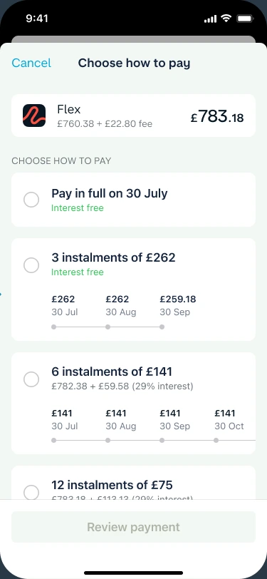
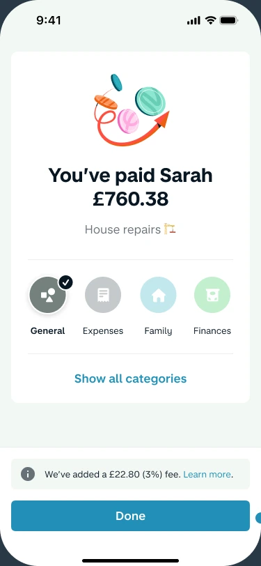
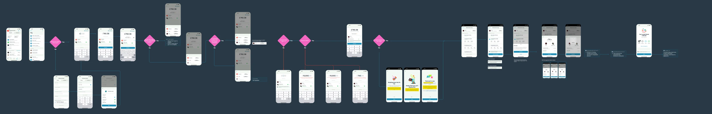

Money Transfers
Paying for what a card can’t.
Builders, personal trainers, group holidays. About 1 in 5 customers who gave feedback wanted this, and Flex needed new revenue that also helped them.
- What we learned
- People expected it where they already pay others, and a clear fee felt better than interest.
- What we did
- We built Flex into Monzo’s payment flow instead of a separate feature. When testing showed some people missed the fee, we added a deliberate step the first time.
- What happened
- Adoption went well beyond the forecast.
Pay Sarah Jane
£760.38House repairs
Paying from
You don’t have enough in this account.


